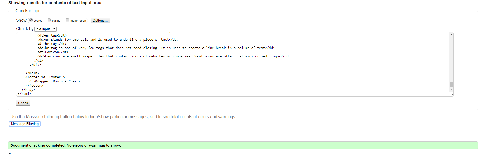
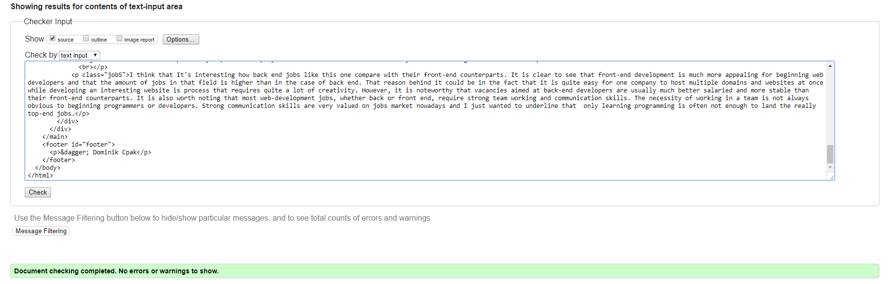
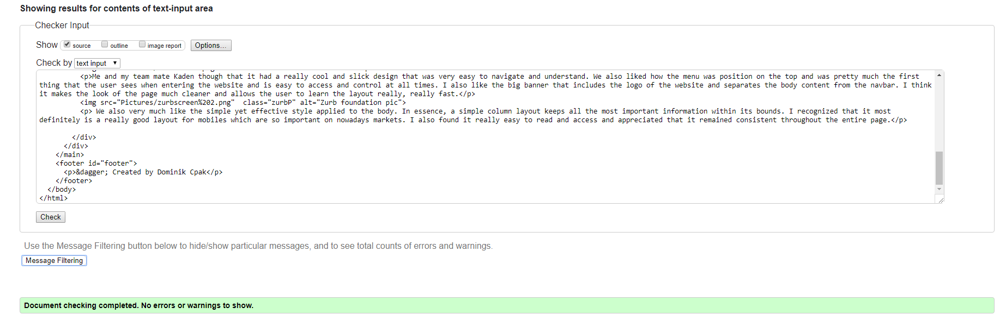
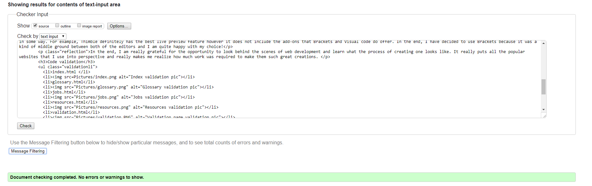
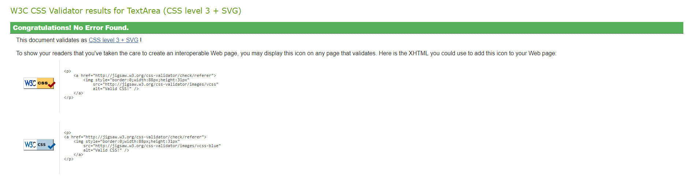
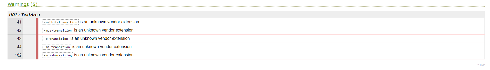

Page Validation and conclusion
Overall, I found that web development is a difficult yet rewarding experience that I thoroughly enjoyed. I have learnt that it requires a lot of patience and that trial and error can take you a really long way! Of course, I have also stumbled upon some problems that I could not fix outright but thanks to help of my tutor and teammate, I was not stuck on them for too long.
Out of the entire module, the one thing that stood out to me the most was the variety in how websites are built all around the internet. There were multiple pages that I went through when looking for inspiration for my assessment and the creative differences from page to page were quite astonishing. Of course, all of the websites have to adhere to the newest technologies and accessibility laws yet they still manage to create completely original pages, which i think is really great!
The difference between various code editors was also a quite curious thing to me. I have worked with Brackets, Visual Code and Thimble and each of them had their own features that helped me in some way. For example, Thimble definitely has the best live preview feature however it does not include the add-ons that Brackets and Visual code do offer. In the end, I have decided to use Brackets because it was a kind of middle ground between both of the editors and I am quite happy with my choice!
In the end, I am really grateful for the opportunity to look behind the scenes of web development and learn what the process of creating one looks like. It really puts all the popular websites that I use into perspective and really makes me realize how much work was required to make them such great creations.
Code validation
- index.html

- glossary.html
- 
- jobs.html
- 
- resources.html
- 
- validation.html
- 
- practice.html
- CSS
- 
- While validating my CSS I have stumbled upon some warnings displayed below. They did not affect the website in any way so I decided to ignore them for now
- 